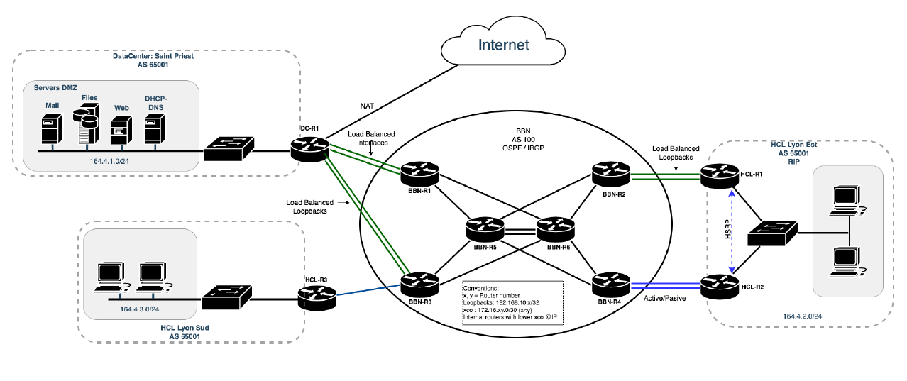
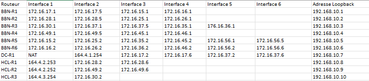

<!DOCTYPE html>

<html lang="fr">
    <head>
        <meta charset=" utf-8">
        <title>hcl.fr</title>
        <link rel="stylesheet" href="style.css">
    </head>
</html></head><body>
<header>
    <nav>
        <menu>
            <ul class="navbar">
                <li>
                    <a href="#Introduction">Introduction</a>
                </li>
                <li>
                    <a href="#DescProjet">Description Projet</a>
                </li>
                <li class="dropdown">
                    <a class="dropbtn" href="#Choix">Choix logiciels</a>
                    <div class="dropdown-content">
                        <a href="#DNSid">DNS</a>
                        <a href="#DHCPid">DHCP</a>
                        <a href="#Webid">Web</a>
                        <a href="#Mailid">Mail</a>
                        <a href="#Sambaid">Samba</a>
                        <a href="#NTPid">NTP</a>
                    </div>
                </li>
				<li>
                    <a href="#VM">Choix VM cliente</a>
                </li>
                <li>
                    <a href="#Evolution">Propositions d'évolutions</a>
                </li>
                <li>
                    <a href="#Conclusion">Conclusion</a>
                </li>
            </ul>
        </menu>
    </nav>
</header>
<main>
    <h1>Compte-rendu Projet Majeure</h1>
    <h2>Mise en place d'une Infrastructure Réseau</h2>
    <section class="Paragraphe" id="Introduction">
        <h3>Introduction</h3>
        <p>Le but de ce projet de mise en place d'Infrastructure Réseau est de mettre en oeuvre les différentes compétences acquises lors des différents modules effectués pendant de ce semestre.
              Nous devions mettre en place une infrastructure réseau et logicielle pour les Hospices Civils de Lyon (HCL).</p>
        <p>L'infrastructure à mettre en place sous le logiciel GNS3 est la suivante :</p>
        
        <p>Voici le plan d'adressage que nous avons mis en place :
        </p>
        
    </section>
    <section class="Paragraphe" id="DescProjet">
        <h3>Mise en place du projet</h3>
        <p>Pour ce projet, nous avons décidé de nous partager l'infrastructure réseau. En effet, Alexandre s'est occupé de mettre en place le Backbone ainsi que les routeurs connectés aux différents HCL et au Data Center.
            Axel, de son côté, s'est occupé de la création de la Machine Virtuelle servant de serveur et des autres VM clientes pour les HCL.</p>
        <p>Pour ce qui est de l'infrastructure réseau, nous avons utilisé les protocoles BGP et OSPF afin de pouvoir communiquer entre les différents sites et le Data Center. Nous avons également joué sur les priorités des 
            routes afin de pouvoir réaliser la liaison Active/Passive.</p>
    </section>
    <section class="Paragraphe" id="Choix">
        <h3>Choix des différents logiciels sur le serveur</h3>
        <p>Pour l'installation du serveur, nous avons décidé d'installer un serveur Ubuntu et non un serveur Windows. En effet, durant l'année, nous avons déjà eu l'occasion d'installer et d'utiliser un serveur Windows et 
            non un serveur Ubuntu. Nous avons donc vu une opportunité dans ce projet d'apprendre à installer et à configurer un serveur Ubuntu.</p>
        <section id="DNSid" class="SousParagraphe">
            <h4>Serveur DNS (Bind9)</h4>
            <p>Pour la configuration du serveur DNS, nous avons décidé d'installer le serveur BIND9. Tout d'abord, le DNS est un service TCP/IP permettant la correspondance entre un nom de domaine et une adresse IP. Nous
                avons décidé d'installer le serveur BIND9 car c'est ce que préconise la documentation Ubuntu. En effet, BIND est le programme le plus couramment utilisé pour maintenir un serveur de noms
                sous Linux. Une fois BIND9 installé, nous modifions plusieurs fichiers : le fichier named.conf.local où nous indiquons la base de donnée de résolution d'addresse et les subnets pouvant effectuer des requêtes, nous modifions le fichier named.conf.options pour encore une fois autoriser les subnets à faire des requêtes, puis nous créons et modifions le fichier db.hcl.fr où nous configurons les différentes adresses IP du serveur, du serveur mail et du
                serveur web. Le détail des différentes configurations effectuées se trouve ci-dessous.</p>
            <button class="collapsible">Tutoriel et codes</button>
            <div class="content">
                <h5>Installation et configuration de BIND9</h5>
                <p>
                    BIND9 s'installe avec la commande
                    <code>sudo apt install bind9</code> Un autre package utile pour tester et résoudre les problèmes de DNS est dnsutils. Vous pouvez l'installer avec la commande
                    <code>sudo apt install dnsutils</code> Une fois les installations terminées, les fichiers de configuration du DNS sont stockés dans le répertoire /etc/bind. Le fichier de configuration principal est /etc/bind/named.conf qui celui-ci comprend named.conf.local pour modifier vos zones et named.conf.options comprenant les options DNS globales.
                </p>
                <p>
                    Editez le fichier /etc/bind/named.conf.options pour définir les adresses IP des serveurs DNS de votre FAI. Dans notre cas nous n'en avons pas l'utilité de le modifier. Pour activer la configuration, redémarrez le serveur DNS à l'aide de la commande
                    <code>sudo systemctl restart bind9.service</code>
                </p>
                <p>
                    Maintenant, éditez le fichier /etc/bind/named.conf.local pour transformer BIND9 en serveur primaire et modifiez les paramètres suivants :
                    <code>
                        zone "hcl.fr" IN {
                        <br>
                            type master;
                        <br>
                            file "/etc/bind/db.hcl.fr";
                        <br>
                            allow-query { "hcl_lan"; };
                        <br>
                        };</code>
                </p>
                <p>
                    Créez un nouveau fichier de zone avec comme modèle un fichier existant. Tapez la commande suivante :
                    <code>sudo cp /etc/bind/db.local /etc/bined/db.hcl.fr</code>
                </p>
                <p>
                    Modifiez avec la commande
                    <code>nano /etc/bind/db.hcl.fr</code> le nouveau fichier créé et ajoutez :
                    <code>
                        $TTL    604800
                        <br>
                        @       IN      SOA     hcl.fr. root.hcl.fr. (
                        <br>
                        &emsp;&emsp;&emsp;&emsp;&emsp;&emsp;2         ; Serial
                        <br>
                        &emsp;&emsp;&emsp;&emsp;&emsp;&emsp;604800         ; Refresh
                        <br>
                        &emsp;&emsp;&emsp;&emsp;&emsp;&emsp;86400         ; Retry
                        <br>
                        &emsp;&emsp;&emsp;&emsp;&emsp;&emsp;2419200         ; Expire
                        <br>
                        &emsp;&emsp;&emsp;&emsp;&emsp;&emsp;604800 )       ; Negative Cache TTL
                        <br>
                        ;name server
                        <br>
                        @	IN	NS	ns.hcl.fr.
                        <br>
                        ns	IN	A	164.4.1.1
                        <br>
                        ;web
                        <br>
                        www	IN	A	164.4.1.1
                        <br>
                        @	IN	A	164.4.1.1
                        <br>
                        ;mail
                        <br>
                        @	IN	MX	10 mail.hcl.fr
                        <br>
                        mail IN A	164.4.1.1</code>
                </p>
                <p>
                    Pensez à redémarrer le service BIND9 à l'aide de la commande
                    <code>sudo systemctl restart bind9.service</code>
                </p>
                <p>
                    Vous pouvez modifier le fichier de zone inversée, mais pour notre cas, nous ne le modifierons pas.
                </p>
                <p>
                    Pensez à modifier le fichier /etc/resolv.conf.head et mettez les configurations suivantes :
                    <code>
                        nameserver 127.0.0.1
                        <br>
                        nameserver 8.8.8.8
                        <br>
                        nameserver 1.1.1.1
                    </code>
                </p>
                <p>
                    Pour voir l'état de votre serveur DNS, tapez la commande :
                    <code>sudo service bind9 status</code>
                </p>
            </div>
        </section>
        <section id="DHCPid" class="SousParagraphe">
            <h4>Serveur DHCP</h4>
            <p>Dans ce projet, nous devions mettre également en place un serveur DHCP. Le protocole DHCP est un service réseau permettant aux ordinateurs hôtes de se voir attribuer automatiquement et dynamiquement des adresses
                IP. Cela va nous servir à attribuer dynamiquement des adresses IP dans chaque site HCL où nous avons deux clients. De leur côté, les ordinateurs configurés pour être des clients DHCP n'ont aucun contrôle sur les paramètres
                qu'ils reçoivent du serveur DHCP. Avant de pouvoir configurer le DHCP, il faut que nous attribuons une adresse IP fixe à notre serveur (164.4.1.1). Pour mettre en place le serveur DHCP, nous avons modifié le fichier dhcpd.conf
                où nous avons déclaré les différents subnets (donc les différents sites HCL) afin que chaque client ait son adresse IP. Nous avons également modifié le fichier isc-dhcp-server afin de mettre le bon nom de l'interface utilisée.
                Pour voir le détail des configurations, déroulez le tutoriel ci-dessous. Pour voir le nom de cette interface, nous entrons la commande <code>ip a</code> Nous avons également configuré sur les serveurs des différents sites un <code>ip-helper</code>
                pointant vers l'IP du serveur DNS afin de pouvoir faire la distribution d'IP dans les sites distants.</p>
            <button class="collapsible">Tutoriel et codes</button>
            <div class="content">
                <h5>Installation et configuration du DHCP</h5>
                <p>
                    Le DHCP s'installe avec la commande
                    <code>sudo apt install isc-dhcp-server</code>
                </p>
                <p>
                    Modifiez le fichier de configuration par défaut /etc/dhcp/dhcpd.conf et ajoutez les configurations suivantes :
                    <code>
                        subnet 164.4.1.0 netmask 255.255.255.0 {<br>
                        &emsp;  range 164.4.1.10 164.4.1.250;<br>
                        &emsp;  option routers 164.4.1.254;<br>
                        }<br>
                           
                        subnet 164.4.2.0 netmask 255.255.255.0 {<br>
                        &emsp;  range 164.4.2.1 164.4.2.250;<br>
                        &emsp;  option routers 164.4.2.254;<br>
                        }<br>
                           
                        subnet 164.4.3.0 netmask 255.255.255.0 {<br>
                        &emsp;  range 164.4.3.1 164.4.3.250;<br>
                        &emsp;  option routers 164.4.3.254;<br>
                        }</code>
                    Avec ces configurations, le serveur DHCP donnera aux clients une adresse IP dans la plage que vous avez donné avec la commande range.
                </p>
                <p>
                    Maintenant modifiez le fichier /etc/default/isc-dhcp-server pour spécifier les interfaces que dhcpd doit écouter. Mettez la configuration suivante :
                    <code>INTERFACESv4="enp0s3"</code>
                </p>
                <p>
                    Après avoir fait les différentes configurations, redémarrez le service dhcpd avec la commande :
                    <code>sudo systemctl restart isc-dhcp-server.service</code>
                </p>
                <p>
                    Pour voir l'état de votre serveur DHCP, vous pouvez taper la commande :
                    <code>sudo service isc-dhcp-server status</code>
                </p>
            </div>
        </section>
        <section id="Webid" class="SousParagraphe">
            <h4>Serveur Web (Apache2)</h4>
            <p>Pour le serveur Web, nous avons décidé d'utiliser Apache. Apache est le service d'hébergement web le plus populaire. Le serveur Apache comme tous les autres serveurs web permet d'établir une connexion entre un 
                serveur et les navigateurs des visiteurs du site web. Si nous n'installons que Apache, nous n'avons que le service HTTP. Pour avoir le service HTTPS donc un service sécurisé, il faut activer le module SSL et générer un certificat SSL
                autosigné grâce à Openssl afin d'activer HTTPS. Il faut également créer la configuration du site puis nous activons le site afin qu'il soit accessible sur les différents clients.</p>
            <button class="collapsible">Tutoriel et codes</button>
            <div class="content">
                <h5>Installation et configuration de Apache2</h5>
                <p>
                    Pour le serveur Web, nous utiliserons Apache, qui est le service d'hebergement web le plus populaire. Pour l'installer, il suffit de taper la commande suivante :
                    <code>sudo apt install apache2</code>
                </p>
                <p>
                    Il faut activer le module ssl pour le https
                    <code>sudo a2enmod ssl</code>
                </p>
                <p>
                    Il faut ensuite générer un certificat ssl autosigné grâce à openssl afin d'activer https. Nous utilisons la commande suivante :
                    <code>sudo openssl req -x509 -nodes -days 365 -newkey rsa:2048 -keyout /etc/ssl/private/server.hcl.fr.key -out /etc/ssl/certs/server.hcl.fr.crt</code>
                </p>
                <p>
                    Il faut à présent créer la configuration du site. Nous créons donc le fichier de configuration avec touch dans le répertoire d'Apache comme il suit :
                    <code>sudo touch /etc/apache2/sites-available/hcl.fr-https.conf</code><br>
                    Il faut ensuite éditer le fichier et taper ce qui suit :
                    <code>
                        &lsaquo;VirtualHost *:80&rsaquo;<br>
                        &emsp;    RewriteEngine On<br>
                        &emsp;    RewriteCond %{HTTPS} !=on<br>
                        &emsp;    RewriteRule ^/?(.*) https://%{SERVER_NAME}/$1 [R=301,L]<br>
                        &lsaquo;/virtualhost&rsaquo;<br>
                        &lsaquo;VirtualHost *:443&rsaquo;<br>
                        &emsp;    ServerAdmin webmaster@localhost<br>
                        &emsp;    DocumentRoot /var/www/html/Site_hcl<br>
                        &emsp;    ErrorLog ${APACHE_LOG_DIR}/error.log<br>
                        &emsp;    CustomLog ${APACHE_LOG_DIR}/access.log combined<br>
                        &emsp;    SSLEngine on<br>
                        &emsp;    SSLCertificateFile /etc/ssl/certs/server.hcl.fr.crt<br>
                        &emsp;    SSLCertificateKeyFile /etc/ssl/private/server.hcl.fr.key<br>
                        &lsaquo;/VirtualHost&rsaquo;</code><br>
                    Remplacez le paramètre DocumentRoot par le chemin de votre site (par défaut /var/www/html/)
                </p>
                <p>
                    Pour activer le site il faut taper les commandes suivantes :
                    <code>
                        sudo a2ensite hcl.fr-https<br>
                        service apache2 restart 
                    </code>
                </p>
            </div>
        </section>
        <section id="Mailid" class="SousParagraphe">
            <h4>Serveur Mail (SMTP, IMAP, POP)</h4>
            <p>Pour le serveur mail, nous avons décidé d'utiliser postfix comme serveur SMTP, mailutils pour tester l'envoi de mail sur le serveur et dovecot pour le serveur IMAP/POP. Nous avons choisi postfix car c'est le MTA
                (Mail Transfert Agent) par défaut de Ubuntu. Pour l'installation de postfix, il y a de nombreuses étapes à suivre qui sont détaillées dans le fichier de configuration ci-dessous. Nous avons choisi d'utiliser mailutils pour tester
                l'envoi de mail sur le serveur car cette solution permet de gérer les mails sous Ubuntu en permettant de consulter les mails locaux ou d'en envoyer depuis le terminal. Enfin, nous avons choisi l'application dovecot car 
                c'est une application d'agent de distribution des courriels MDA et qui a comme préoccupation principale la sécurité. De plus dovecot est très simple à installer.</p>
            <button class="collapsible">Tutoriel et codes</button>
            <div class="content">
                <h5>Installation et configuration de Postfix</h5>
                <p>
                    Postfix s'installe avec la commande
                    <code>sudo apt install postfix</code> Si lors de l'installation une fenêtre vous demande la configuration de postfix, effectuez la configuration imédiatement ou choisissez "No Configuration" pour y revenir plus tard. Dans le second cas, utilisez la commande
                    <code>sudo dpkg-reconfigure postfix</code>
                    pour relancer la configuration.
                </p>
                <p>
                    Pour la configuration, choisir les paramètres suivant à chaque fenêtre respective :
                    <code>
                        Internet Site<br>
                        hcl.fr<br>
                        tp #remplacer par votre nom d'utilisateur<br>
                        mail.hcl.fr, localhost.localdomain, localhost, hcl.fr<br>
                        No<br>
                        127.0.0.1/8 [::ffff:127.0.0.0]/104 [::1]/128 164.4.1.1/24	#164.4.1.1/24 remplacer par l'IP statique de votre serveur<br>
                        0<br>
                        +<br>
                        all</code>
                </p>
                <p>
                    Editez le fichier /etc/postfix/main.cf pour ajouter et modifiez les paramètres suivants :
                    <code>
                        mydomain = hcl.fr<br>
                        mynetworks = 127.0.0.0/8 [::ffff:127.0.0.0]/104 [::1]/128 164.4.0.0/22<br>
                        home_mailbox = Maildir/
                    </code>
                </p>
                <p>
                    Tapez la commande :
                    <br><code>mkdir -p /etc/skel/Maildir/{cur,new,tmp}</code>

                </p>
                <p>Ajoutez finalement 2 utilisateurs :<br><code>
                        useradd -m user1<br>
                        passwd user1<br>
                        <br>
                        useradd -m user2<br>
                        passwd user2</code>
                </p>
                <p>Redémarrez le service postfix :
                    <br><code>
                        service postfix restart</code>
                </p>
                <p>
                    Testez le bon fonctionnement avec les commandes suivantes :
                    <br><code>
                        telnet localhost 25<br>
                        ehlo localhost<br>
                        ...<br>
                        mail from:user1@hcl.fr<br>
                        ...<br>
                        rcpt to:user2@hcl.fr<br>
                        ...<br>
                        data<br>
                        ...<br>
                        écrivez ce que vous voulez ici, c'est le corps du message<br>
                        Pour finir faire retour à la ligne, "." et retour à la ligne.<br>
                        .<br>
                        quit</code>
                    puis allez dans /home/user2/Maildir/new. Vous devriez trouver votre message.
                </p>
                <h5>Installation et configuration de Dovecot</h5>
                <p>
                    Dovecot s'installe avec la commande
                    <code>sudo apt install dovecot-imapd dovecot-pop3d</code>
                </p>
                <p>
                    Modifiez /etc/dovecot/dovecot.conf et ajoutez :
                    <code>
                        protocols = pop3 imap<br>
                        mail_location = maildir:~/Maildir</code>
                </p>
                <p>
                    Redémarrez les services dovecot :
                    <br><code>service dovecot restart</code>
                </p>
                <p>
                    Testez le bon fonctionnement avec les commandes suivantes :<br><code>
                        telnet localhost 110<br>
                        ...<br>
                        user user2<br>
                        ...<br>
                        pass user2pwd<br>
                        ...<br>
                        list<br>
                        ... contenu du mail<br>
                        quit</code>
                </p>
            </div>
        </section>
        <section id="Sambaid" class="SousParagraphe">
            <h4>Serveur de fichier (Samba)</h4>
            <p>Enfin, pour le serveur de fichier, nous avons décidé de configurer Samba. Samba est recommandé par la documentation Ubuntu lors de l'installation de Ubuntu serveur. Le serveur de fichier
                permet de mettre en réseau les différents ordinateurs clients des HCL. Cela permet le partage de fichiers.</p>
            <button class="collapsible">Tutoriel et codes</button>
            <div class="content">
                <h5>Installation et configuration de Samba</h5>
                <p>
                    Samba s'installe avec la commande
                    <code>sudo apt install samba</code>
                </p>
                <p>
                    Allez dans le fichier /etc/samba/smb.conf pour pouvoir modifier les paires clé/valeur. Créez une nouvelle section en bas du fichier pour le répertoire à partager :
                    <code>
                        [share]<br>
                            comment = Ubuntu File Server Share<br>
                            path = /srv/samba/share<br>
                            browsable = yes<br>
                            guest ok = yes<br>
                            read only = no<br>
                            create mask = 0755<br>
                            force group = tp<br>
                            force user = tp
                    </code>
                </p>
                <p>
                    Maintenant que Samba est configuré, le répertoire doit être créé et les autorisations modifiées. Tapez les commandes suivantes :
                    <code>
                        sudo mkdir -p /srv/samba/share<br>
                        sudo chown nobody:nogroup /srv/samba/share/</code>
                </p>
                <p>
                    Redémarrez les services samba pour activer la nouvelle configuration :
                    <code>sudo systemctl restart smbd.service nmbd.service</code>
                </p>
            </div>
        </section>
        <section id="NTPid" class="SousParagraphe">
            <h4 id="NTPid">Protocole NTP</h4>
            <p>Nous avons décidé en fin de projet de mettre en place le protocole NTP afin de pouvoir synchroniser les horologes des différents systèmes informatiques. Le protocole NTP repose sur le protocole UDP et s'appuie sur le UTC
                (Coordinated Universal Time). Le protocole NTP permet d'éviter de nombreux problèmes de connexion dans un réseau.</p>
            <button class="collapsible">Tutoriel et codes</button>
            <div class="content">
                <h5>Installation et configuration de NTP</h5>
                <p>
                    Le service NTP s'installe avec la commande
                    <code>sudo apt-get install ntp</code>
                </p>
                <p>
                    Puis dites au routeur d'utiliser le servuer NTP comme source avec les commandes :
                    <code>
                        ntp server 164.4.1.1 prefer source fa0/0<br>
                        ntp update-calendar
                    </code>
                </p>
            </div>
        </section>
    </section>
	<section class="Paragraphe" id="VM">
        <h3>Choix des différents logiciels sur les VM clientes</h3>
		<p>Pour ce qui est des Machines Virtuelles, nous avons décidé d'utiliser des VM Kali Linux qui étaient déjà présentes sur nos ordinateurs Windows. Afin d'utiliser la connexion à internet, nous utilisons l'application 
		Firefox nous permettant d'accéder au serveur web hébergé sur le site internet www.hcl.fr. Par ailleurs, le client de messagerie que nous utilisons est Thunderbird. Thunderbird est une application de messagerie facile 
		d'utilisation et simple à configurer.</p>
	</section>
    <section class="Paragraphe" id="Evolution">
        <h3>Propositions d'évolutions</h3>
        <p>Durant tout ce projet, nous avons pu voir que nous pourrions améliorer notre mise en place de l'infrastructure à l'aide de plusieurs solutions de sécurité permettant de sécuriser les différents flux entre les différents
            sites. Nous aurions pu mettre en place le protocole AAA. Ce protocole permet de réaliser trois fonctions : Authentification, Autorisation et Traçabilité (en anglais Authentication, Authorization, and Accounting/Auditing).
            L'architecture AAA permet aux utilisateurs d'accéder aux périphériques en réseau qui leur ont été attribués et protège le réseau contre les accès non autorisés. Nous aurions pu également mettre en place le chiffrement des données.</p>
        <p>Nous pourrions peut-être penser à restructurer l'infrastructure réseau afin d'avoir une infrastructure évolutive permettant de réagir facilement et rapidement contre des attaques sans impacter les performances de l'infrastructure
            en place. Nous pouvons appliquer également une meilleure gestion du stockage des différentes données.</p>
    </section>
    <section class="Paragraphe" id="Conclusion">
        <h3>Conclusion</h3>
        <p>Pour conclure, ce projet nous a permis de mettre en pratique les différents acquis lors de notre premier semestre de spécialisation. Nous avons pu mettre en place les différentes pièces du puzzle et les imbriquer entre
            elles. Cela nous a également permis d'avoir un avant-goût de ce que nous pourrions découvrir dans les entreprises et dans notre futur métier.</p>
    </section>
    <button onclick="topFunction()" id="myBtn" title="Go to top">&#8593</button>
</main>
<footer>
    Par Alexandre Drevet et Axel François
</footer></body><script src="script.js"></script></html>
